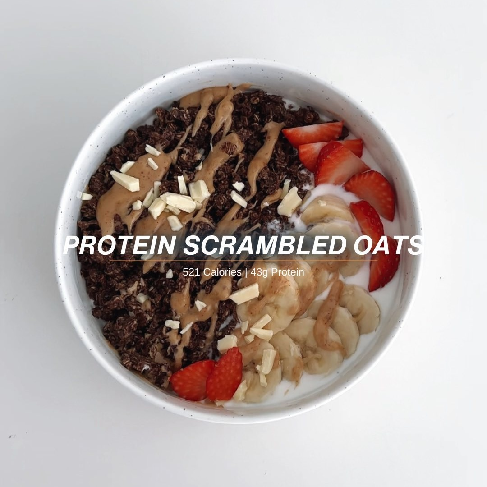

Scrambled Oats
Ingredientes:
- 45 g Avena
- ½ Plátano
- 1 Huevo
- 150 g Yogur Griego
- 5 g Mantequilla de Maní
- 1 cda Cacao en polvo
- 1 cdita Canela
- 10 g Chocolate
- 1 Scoop de proteína en polvo
Instrucciones:
- Añade el plátano a un bowl y machacalo
- A continuación añade la avena, canela, cacao, proteína y el huevo y revuelve bien
- Cocinalo en un sarten y revuelvelo bien
- En un bowl, añade al yogur y luego la avena caliente y añade toppings